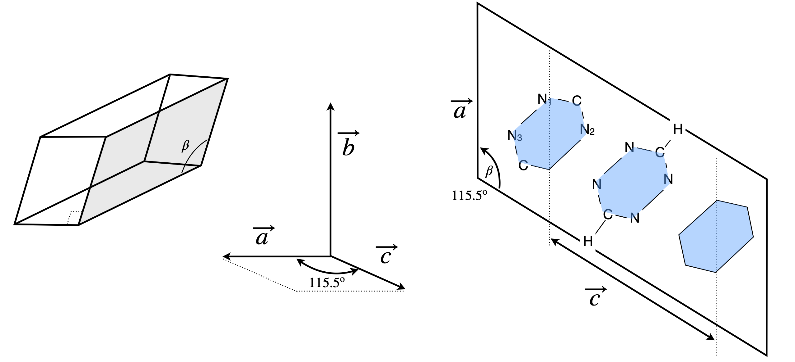

8 Axes need not be right-angled or of equal length
Contents
8 Axes need not be right-angled or of equal length#
# import all python add-ons etc that will be needed later on
%matplotlib inline
import numpy as np
import matplotlib.pyplot as plt
from sympy import *
from scipy.integrate import quad,odeint,solve_ivp
from scipy import linalg
init_printing() # allows printing of SymPy results in typeset maths format
plt.rcParams.update({'font.size': 16}) # set font size for plots
8.1 Basis set#
In crystallography the coordinates of the unit cell are often reported in terms of the crystal type, monoclinic, triclinic, and so forth, whose axes are not mutually at right angles or always of the same length. The base vectors are no longer the orthonormal \(\boldsymbol i, j, k\) set we have been using and are now labelled as \(\vec a, \vec b, \vec c\) to indicate that they are non-orthogonal. By convention, the angle \(\alpha\) lies between \(b\) and \(c\), \(\beta\) between \(a\) and \(c\), and \(\gamma\) between \(a\) and \(b\). This is shown in figure 20. Many authors use \(\boldsymbol {a,b,c}\) instead of \(\vec a, \vec b, \vec c\) but using arrows is here clearer.
As the base vectors are not at \(90^\text{o}\) to one another, when a dot product is calculated, the terms \(\vec a\cdot \vec b, \vec a\cdot\vec c\), and \(\vec c\cdot \vec b\) are not zero but the corresponding cross terms \(\boldsymbol i\cdot k, \boldsymbol i\cdot j\), and \(\boldsymbol j\cdot k\) in the right-angled basis set are. Additionally, the base vectors are often not of unit length, but have the length, and relative angles, of the unit cell, which means that they are not normalized and not orthogonal - just about as bad as it can get! However, the method to calculate a dot product is, in principle, no different to that already described. Although a, b, and c represent the length of the unit cell, these are not unit vectors; the ‘unit’ here refers to the minimum repeat distance in the crystal.
8.2 non-orthogonal vectors#
Suppose two vectors are \(\vec V\) and \(\vec W\) in the non-normalized, non-orthogonal \((\vec a, \vec b, \vec c)\) basis then we can write
and \(v_1\) is the amount (component) of the vector along axes \(a\), and \(v_2\) along \(b\), and so forth, and similarly for \(\vec W\). Expanding out the dot product produces nine terms, which do have some symmetry;
Keeping our nerve, we can simplify, since \(\vec a\cdot \vec a = a^2\), if \(a\) is the length of vector \(a\) and similarly for \(b\) and \(c\). The dot product gives the cosine of the angle between any two vectors, just as it does for orthogonal vectors, equation 2. From Fig. 20 it can be seen that
The cosines remain because the axes are not at \(90^\text{o}\) so that the contribution a component along each axis makes to the others is not zero. Substituting into equation 18 gives,
The magnitude of \(\vec V\) is calculated in a similar way
as is \(|\vec W|\) by substituting \(w\)’s for \(v\)’s.

Figure 20. Non-orthogonal axes and non-normalized base vectors \(\vec a, \vec b\) and \(\vec c\).
8.3 Calculating bond lengths#
In X-ray crystallography, an atom’s coordinates are often given in terms of the unit cell dimensions and these are not always at right angles to one another. Suppose that the vector of atom C\(_A\)’s coordinates, given in unit cell dimensions, is A and that for atom C\(_B\) is AB. The bond length is calculated from the difference of two vectors \(\vec V = \vec A - \vec B\) and then by calculating the dot product of this vector with itself, equation 21.
To illustrate the method described in Section 8.2, (i) the C-N\(_1\) bond length and (ii) the angle between the N\(_1\)CN\(_2\) atoms in s-tetrazine, \(\mathrm{C_2N_4H_2}\), will be calculated; its geometry is shown in figure 22. The crystal structure was determined using Cu radiation with a wavelength of \(0.1542 \) nm. The unit cell has dimensions of \(a = 0.523\) nm, \(b = 0.579\) nm, and \(c = 0.663\) nm (Bertinotti & Giacomello 1956). The angle between the long and either short axis is \(90^\text{o}\), and the angle between the two short axes is \(115^\text{o}30'\). The crystal is therefore monoclinic and this crystal type is characterized by one twofold symmetry axis and one mirror plane. The fractional coordinates of some of the atoms in the crystal are shown in the table. These are in units of the length of each base vector or unit cell dimension.
Figure 21. Figure to show how to calculate a bond length given vectors \(\vec A\) and \(\vec B\) of the two atom’s coordinates.
The vectors \(\vec a, \vec b\), and \(\vec c\) form the basis-set axes with lengths \(a, b, c\), respectively, which are the same as the unit cell. The origin of coordinates is assumed to be \(O = [0 0 0] \) and no H atoms are resolved. Using the data, the magnitude of the base vectors are (in nm)
The angle \(\beta\) between \(\vec a\) and \(c = 115^\text{o}30' \equiv 115.5^\text{o}\) and the other angles are each \(90^\text{o}\).
(i) To find the C-N1 bond length, let the vector for the position of the N\(_1\) atom be \(\vec W_{N_1} = w_1\vec a + w_2\vec b + w_3\vec c\). Using data in the table, this vector is
and the constants \(a, b, c\) are present because the lengths are given as fractions of the unit cell length. These could be multiplied out at the outset to give the vector
but can be left and done at the end of the calculation. The vector for the C atom is
Define a new vector \(\vec\Delta\) to be the bond vector \(\vec V_C - \vec W_{N_1}\), then
where \(\Delta_1 =(v_1 -w_1),\Delta_2 =(v_2 -w_3),\Delta_3 =(v_3 -w_3)\) and as\(|\Delta |= d\) is the bond length, using the definition of the dot product \(\vec \Delta \cdot \vec\Delta\), given in equation 21 and substituting for \(d\) will give
where \(a, b, c\) are the magnitudes of their corresponding vectors \(\vec a, \vec b,\vec c\) . In this particular example, \(\beta = 115.5^\text{o}\) and the angles \(\gamma=\alpha = 90^\text{o} \) and their cosines zero; therefore,
Substituting for numerical values gives \Delta_1 = 0.1834 - 0.2546 = -0.07128, \Delta_2 = -0.1822, etc. Therefore
and using the values for \(a, b, c\) produces a C-N\(_1\) bond length of \(d = 0.1346\) nm.
(ii) The angle \(\mathrm{N_1-C-N_2}\) (or any other) is found by defining difference vectors \(\vec \Delta_{CN_2}\) and \(\vec \Delta_{CN_1}\) for the two bonds as just described, then calculating their dot product
The values \(d_{CN_1}\) and \(d_{CN_2}\) are the bond lengths and using the calculated bond lengths the \(\mathrm{N_1-C-N_2}\) angle is \(114.5^\text{o}\). To make sure you understand the calculation, calculate the \(\mathrm{C-N_2}\) and \(\mathrm{N_1-N_2}\) bond lengths. You should find them to be \(0.1323\) and \(0.1321\) nm respectively.

Figure 22. A monoclinic crystal, the axes, and a sketch (right) of the projection of the tetrazine structure looking down the b axis. The plane of the s - tetrazine molecule lies in the \(a - c\) plane. (Not all atoms are explicitly shown.)
9 Conversion from one basis set to another#
It is sometimes essential to be able to convert from one basis set to another, and if you were involved in computer graphics this would be something that you would have to do all the time as the viewing point and perspective of the scene changes. In this case, the basis set would probably be called a reference frame. In geography or astronomy, converting from earth-based coordinates to celestial ones is commonplace, in chemistry and physics converting rectangular to polar coordinates is often necessary when dealing with atomic or molecular orbitals. An X-ray crystallographic analysis of a molecule usually results in coordinates that are quoted in terms of the unit cell parameters the axes of which may be neither at right angles to one another nor of equal length. Although a molecule’s bond lengths and angles can be calculated in these non-orthogonal coordinates, as illustrated in Section 8.3, it is often practical to convert to normal right-angled coordinates, particularly for drawing structures.
The method of converting from triclinic to orthonormal coordinates is now described and is used to illustrate the general method of converting one basis set into another. We use triclinic coordinate axes because these axes are set at different angles to one another and are each of different length. This conversion will lead to a related but more useful method of calculating geometries from X-ray data than that of Section 8. The two sets of axes shown in figure 23 are the general triclinic \(a, b, c\) and the orthogonal or conventional Cartesian \(x, y, z\).
Any vector is unchanged by changing its basis set and therefore its coefficients must change between bases. If \(\vec V\) is any vector and \(g_{x,y,z}\) is the set of its coefficients in an \(xyz\) basis and \(g_{A,B,C}\) in another basis \(ABC\), this equality is written as
To transform from the ABC basis with known coefficients \(g_A, g_B, g_c\) to another \(xyz\) basis a new set of coefficients \(g_x, g_y, g_z\) need to be calculated.
To effect the conversion of a vector, the axes must be converted first, and then the vector’s new coefficients calculated. These coefficients will be calculated by expanding each of the \(A, B, C\) vectors, equations 26, in turn with equations like those of eqn. 27.

Figure 23. Two sets of unit vectors; The set \(\vec x\vec y \vec z\) are orthogonal but \(\vec A\vec B\vec C\) are not. Vector \(A\) lies along \(\vec x\) and \(\vec B\) is in the \(x\)y plane.
9.1 Converting axes#
We will assume that the \(xyz\) basis set is orthogonal (just as are \(\boldsymbol i, \boldsymbol j,\boldsymbol k\)), as is the convention, therefore the basis vectors \(\vec x, \vec y\), and \(\vec z\) are orthogonal to one another, for instance,
and as the vectors are normalized
The non-orthogonal axes have unit vectors \(\vec A,\vec B, \vec C\) lying along them and which are projected in turn onto the right-angled \(xyz\) unit vectors, in which case they are not a basis set, and must therefore be represented as linear combinations of \(x, y, z\) unit vectors
The base vectors \(A, B, C\) have unit lengths, therefore, \(k_1^2 + k_2^2 + k_3^2 = 1\) and similarly for the \(m\) and \(n\). Changing a basis does not change the vector at all, it merely moves the components around so that they have different values in a different basis set. The equations 27 represent the axes conversion from the \(ABC\) basis set to the \(xyz\). These three equations can be put into a matrix form that shows the pattern of indices nicely. You should consult Chapter 7 if you are not familiar with matrices and their multiplication.
The two sets of axes could be placed at any orientation with respect to one another but to make things easier, let vectors \(A\) and \(x\) coincide and let vector \(B\) be in the \(x-y\) plane, see figure 23. If this orientation is calculated in some other way then the basis set \((x\; y\; z)\) may need to be reordered to get everything correct. The way to check that everything is all right is to make all the angles \(90^\text{o}\) then a diagonal matrix should result.
9.2 Calculating the new coefficients#
Vector \(A\) lies along the \(x\)-axis, therefore its \(y\) and \(z\) components \(k_2\) and \(k_3\) are zero. The remaining component \(k_1\) has a length \(1\), which is the length of \(\vec A\), therefore the first of equations 27 representing the vector \(A\) in the \(xyz\) basis set is simply;
Similarly, \(\vec B\) which is in the \(x-y\) plane, has a component on the \(x\)-axis of \(m_1 = \cos(\gamma )\), its \(y\) component is \(m_2 = \cos(\pi/2 -\gamma) = \sin(\gamma )\). The component on the z-axis is zero, \(m_3 = 0\), because the vector \(\vec B\) is in the \(x-y\) plane. The second vector is therefore
Calculating \(\vec C\) is a little more complex. The component (projection) onto the x-axis is \(n_1 = \cos(\beta)\). Calculating the other components is harder because the angle \(\alpha\) only connects \(\vec C\) to \(\vec B\) and not to a \(y\)- or \(x\)-axis. However, with a little cunning, starting with the dot product the coefficients can be found. The dot product is
because \(\vec B\) and \(\vec C\) are unit vectors.
Expanding this equation in the new basis set given by equation 27, and substituting for values already determined, gives
Using the orthogonality rules \(\vec x\cdot\vec x = \vec y\cdot\vec y = 1\) together with the rule that all ‘cross terms’ such as \(\vec x\cdot\vec y = 0\) produces therefore
therefore
The coefficient \(n_3\) remains to be determined. This can be found from the normalization condition \(n^2_1 + n_2^2 + n^2_3 = 1\) and, again, using values already determined, is
The final equation for \(\vec C\) is
The derivation so far has involved unit vectors, but a real crystal has vectors along the crystallographic axes that are not necessarily all of the same length or even of unit length. The notation usually used is to define the axes as \(\vec a, \vec b, \vec c\) of length \(a, b, c\) respectively and the unit vectors then can be written as \(\vec A = \vec a/a\), and so forth. The bold lower case letter represents the actual crystal vector a. Making this change means that each of the vector equations can be rewritten by multiplying by the size of each vector, for instance as,
Written in matrix form they are clearer,
This equation can be written in shorthand as
where \(\vec D\) is the vector \(abc\) and \(\vec X\) that of unit vectors \(xyz\) and the matrix is \(\boldsymbol M\). This matrix represents the conversion from one set of axes into another; as written converting from the \(xyz\) axes to the \(abc\). To effect the opposite conversion, the equation to use is
where \(\boldsymbol{M}^{-1}\) is the inverse of \(\boldsymbol{M}\), see Chapter 7. Finally, and as a check when all the angles are \(90^\text{o}\), matrix \(\boldsymbol{M}\) reduces to a diagonal matrix and this tells us that ordering the axes as \(ABC\) gives the resulting order \(xyz\).
10 Transformation of basis vectors#
10.1 Calculating bond lengths and angles in non right-angled crystals#
Normally, we are not so interested in converting axes but wish to find an atom’s coordinates in Cartesian (\(xyz\)) axes, but which are given in crystallographic tables in terms of the unit cell \(abc\) axes. The convention in crystallographic tables is to quote the coordinates as fractions of the unit cell lengths in columns labelled as \(x/a, y/b, z/c\), or even as \(x, y, z\). This is initially confusing because \(xyz\) axes are not involved.
The method now described is not limited to the specific example considered, but will apply to any two basis sets. The coordinates of an atom describe a vector from the origin and equation 26 is used to describe the vector. The same vector has coefficients \(g_x, g_y, g_z\) in the \(xyz\) basis set (axes) and \(g_A, g_B, g_C\) in the \(abc\) basis set. The right-hand side of equation 26 can be expanded by replacing the base vectors \(\vec A, \vec B, \vec C\) by equation 27, which gives
This is really three equations and, although difficult to understand in this form, becomes clearer when written as matrices:
which is simplified to
and the square matrix is the matrix, \(\boldsymbol M\) of equation 30. This last equation can be summarized as the matrix equation
where the \(g\)’s are vectors of the coefficients . With X-ray data, the \(g_{ABC}\) are the \(x/a, y/b, z/c\) data given in crystallographic tables. This equation shows us how to calculate the coordinates in \(xyz\) axes given those in \(abc\). To calculate \(abc\) coordinates given \(xyz\), the equation to use is
which is obtained by right multiplying both sides of eqn 31 by the inverse of \(\boldsymbol M\).
If a vector \(\vec W\) between two atoms represents the bond vector, then its coordinates are conventionally given in terms of \(abc\) and its length can be calculated from equation 21. More conveniently, the dot product can be used
and with equation 31 and is
which is the same as equation 21 when it is expanded out. The superscript \(T\) means that the transpose is taken, see Chapter 7. This equation looks a little different from those dot products calculated previously because the transpose is in a different place. This is because \(\vec g\) is a row vector and the left vector has to be a row, the right-hand side as a column, hence the transpose.
The bond angle can be calculated using the dot product of two bond vectors after converting into \(xyz\) coordinates. The angle is therefore
In a monoclinic crystal, which is perhaps the most common crystal type, the equations are considerably simplified because \(\alpha = \gamma = 90^\text{o}\) then the matrix \(\boldsymbol M\), equation 30 is
and the new coordinates are
In Section 8.3 some data from s-tetrazine was used to calculate bond lengths and angles. The unit cell parameters are \(a = 0.523\) nm, \(b = 0.579\) nm, and \(c = 0.663\) nm and angle \(\beta = 115.5^\text{o}\) making \(\cos(\beta) = -0.4305, \sin(\beta) = 0.9026\). Using equation 31 the \(g_{x,y,z}\) coefficients for the carbon atom (in nm) are
The C-N\(_1\) bond length can be calculated either by converting the C or N\(_1\) atom’s coordinates separately, or by forming the \(g_{ABC}\) values of a bond vector as the difference in C and N\(_1\) values, and then transforming with the M matrix. The result is \(0.1346\) nm, which is the same found in Section 8.3 but arrived at far more simply.
A more complex example of using these formulae is to calculate the volume of the unit cell, (see Section 10.2) bond distances \(\mathrm{C_1-C_2}\) and \(\mathrm{C_2-C_3}\) and the \(\mathrm{C1-C2} \to \mathrm{C_2-C_3}\) bond angle in the benzene ring of o-nitrobenzoic acid. Python will be used to do the arithmetic. The crystal structure is triclinic with the following cell parameters (G. Portalone Acta Cryst. E, 2009, v65, p0954), lengths in \(\overset{\text{ o}}{A}\) and angles in degrees.
The first step is to define the matrix \(\boldsymbol M\), and then equation 31 where the row vector is the vector of bond coordinates. When M was defined, it was done so in terms of fractional coordinates, as shown in the table, so that these can be used directly in the calculation. The angles are quoted in degrees and minutes and must be converted into fractions of degrees and then radians.
# Determine matrix M
# data from G. Portalone. Acta. Cryst. E, 2009 v 65 p 0954. Values in angstrom
a = 5.0147
b = 7.527
c = 10.620
alpha = 69.41*np.pi/180 # make angles radians
beta = 86.07*np.pi/180
gama = 71.01*np.pi/180
C1 = np.array([1.0287, 0.0235, 0.6923]) # x/a, y/b, z/c defined as array
C2 = np.array([0.8416, -0.0231, 0.7933])
C3 = np.array([0.8224, -0.2123, 0.8508])
N1 = np.array([0.6642, 0.1288, 0.8481])
n2 = ( np.cos(alpha) - np.cos(gama)*np.cos(beta) )/np.sin(gama)
M = np.array([[a, 0, 0],
[b*np.cos(gama), b*np.sin(gama), 0],
[c*np.cos(beta), c*n2,c*np.sqrt(np.sin(beta)**2-n2**2)]])
M
array([[5.0147 , 0. , 0. ],
[2.44930932, 7.11734591, 0. ],
[0.72787003, 3.69930532, 9.92822972]])
Volume = np.linalg.det(M)
print('{:s}{:8.4f}{:s}'.format('Volume =',Volume/1000,' nm^3') )
Volume = 0.3544 nm^3
def bond_length(A,B): # A and B are vectors of x/a, y/b, z/c eqn. 31a
dAB = (A - B) @ M # @ is matric multiply
return np.sqrt(np.dot(dAB,dAB))
#---------------------------------
def bond_angle(A,B,C): # central atom first then left & right, eqn. 33
dAB = (A-B) @ M
dAC = (A-C) @ M
LAB = np.sqrt(np.dot(dAB,dAB))
LAC = np.sqrt(np.dot(dAC,dAC))
return np.arccos(np.dot(dAB,dAC)/(LAB*LAC) )*180/np.pi
#----------------------------------
print('{:s}{:6.3f}{:s}'.format('bond C1 C2=', bond_length(C2,C1)/10 ,' nm' ))
print('{:s}{:6.3f}{:s}'.format('bond C2 C3=', bond_length(C2,C3)/10 ,' nm' ))
print('{:s}{:6.3f}{:s}'.format('bond N1 C2=', bond_length(C2,N1)/10 ,' nm' ))
print('{:s}{:6.1f}{:s}'.format('bond angle C123 =', bond_angle(C2,C1,C3),' degrees') )
print('{:s}{:6.1f}{:s}'.format('bond angle C12N =', bond_angle(C2,C1,N1),' degrees') )
bond C1 C2= 0.140 nm
bond C2 C3= 0.137 nm
bond N1 C2= 0.147 nm
bond angle C123 = 122.5 degrees
bond angle C12N = 121.1 degrees
11 Unit cell volume#
The absolute value of the determinant of \(\boldsymbol M\) is numerically equal to the volume of the unit cell, (Giacovazzo et al. 1992, p. 68). When all the angles are \(90^\text{o}\) then this matrix reduces to a diagonal form, and the determinant is \(abc\), which is equal to the volume. Consider a monoclinic crystal, such as benzoic acid, where only one crystal angle is not \(90^\text{o}\), and where \(a = 0.552, b = 0.514, c = 2.190\) nm and the angle \(\beta= 97^\text{o}\). The volume of the crystal will only be a little smaller than that of a solid rectangle of sides \(abc = 0.621\;\mathrm{ nm^3}\) because the angle \(\beta\) is close to \(90^\text{o}\). The \(\boldsymbol M\) matrix for a monoclinic crystal where \(\alpha = \gamma =90^\text{o}\) is
The determinant is simple to do by hand in this particular example because the terms that are zero mean that the determinant is the product of the diagonal terms or \(V=abc\sin(\beta)\). This result makes sense viewing the geometry of a monoclinic crystal, figure 22, which is that of a rectangular box pushed along one side. The term \(\sin(\beta)\) is the amount the height is reduced compared to a rectangular box. Using the cell parameters, the volume of the benzoic acid unit cell is \(0.617\;\mathrm{ nm^3}\), which is slightly smaller than the rectangular \(0.621\;\mathrm{nm^3}\).